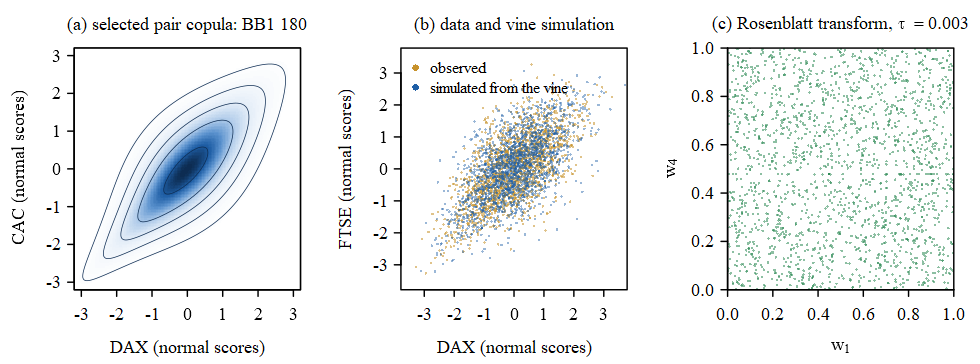

R package¶
The R package fortvine lets you use the library from R. It is a binding, not a port: every
density, distribution function, h-function, fit, family selection, vine selection, Rosenblatt
transform and pseudo-observation is computed by the Fortran code through its
C interface (the fvc_* routines of fortvine_capi, the C interface to the
typed API).
The R functions only check and convert their arguments (an n x d R matrix becomes the
u(d, n) array of the C routines, family names become integer codes) and wrap the results in
R objects with print, summary and logLik methods. The function names follow
rvinecopulib, so code written for it needs few
changes.
Installation¶
The package compiles the library from source with R's own toolchain, so you need a Fortran compiler that R can use:
| platform | what to install |
|---|---|
| Windows | Rtools matching your R version (Rtools43 for R 4.3, Rtools44 for R 4.4, ...). It contains gfortran. |
| Linux | gfortran, e.g. sudo apt-get install gfortran (Debian, Ubuntu) or sudo dnf install gcc-gfortran (Fedora) |
| macOS | the gfortran build that CRAN recommends for your R version (mac.r-project.org/tools) |
Then, from R:
or, from a clone of the repository:
OpenMP is used when R's compiler supports it; otherwise the library runs on one thread and
gives the same results. The cores argument of each function sets the number of threads
(default 1, as CRAN expects of R packages). Selection over large family sets is several times
faster with more threads, e.g. cores = parallel::detectCores() %/% 2.
Quick start¶
A pair copula: build a model, evaluate the density and the h-function, simulate, fit and select.
library(fortvine)
cop <- bicop_dist("clayton", 0, 2)
u <- rbind(c(0.1, 0.1), c(0.5, 0.5), c(0.9, 0.9))
dbicop(u, cop)
#> [1] 5.370177 1.481004 2.157801
hbicop(u, 1, cop)
#> [1] 0.3562217 0.4319594 0.7703349
pbicop(u, cop) # distribution function C(u1, u2)
#> [1] 0.07088812 0.37796447 0.82502865
set.seed(42)
x <- rbicop(2000, cop)
bicop(x, family_set = "clayton", rotation = 0)$parameters # fit one family and rotation
#> [1] 1.974684
bicop(x, family_set = "all") # select among families 0-22
#> Bivariate copula ('bicop_dist'): family = clayton (3), rotation = 0, parameters = 1.975
Families are given by their fortvine name (any case; "t" also means "student") or code.
fortvine_families() lists the 111 families with their codes and numbers of parameters,
read from the library. The generic families (codes \(\ge 10000\)) work everywhere a family is
accepted:
fam <- fortvine_families()
table(generic = fam$code >= 10000)
#> generic
#> FALSE TRUE
#> 26 85
bicop(x, family_set = "generic", cores = 2)
#> Bivariate copula ('bicop_dist'): family = Arch(gamma.Sibuya) (11700), rotation = 0, parameters = 1.936, 1.064
Functions¶
| R function | what it does | computed by |
|---|---|---|
bicop_dist(family, rotation, parameters) |
pair-copula model object | (checks only) |
dbicop(u, model, log = FALSE) |
density \(c(u_1, u_2)\) or \(\log c\) | fvc_bicop_eval |
pbicop(u, model) |
distribution function \(C(u_1, u_2)\) | fvc_bicop_eval |
hbicop(u, cond_var, model, inverse = FALSE) |
\(h_1 = \partial C / \partial u_1\), \(h_2 = \partial C / \partial u_2\) and their inverses | fvc_bicop_eval |
rbicop(n, model) |
simulation \(\big(u_1, h_1^{-1}(u_1, w)\big)\) | fvc_bicop_eval |
bicop(data, family_set, selcrit, rotation = NULL, weights, ...) |
select family, rotation and parameters; or, with rotation, fit one family |
fvc_bicop_fit |
bicop_par_bounds(family) |
parameter box of a family | fvc_par_bounds |
gen_flip(model) |
generic family of the transposed copula \(C(u_2, u_1)\) | fvc_gen_flip |
dvine_structure(order, trunc_lvl), cvine_structure(order, trunc_lvl) |
D-vine and C-vine structures | fvc_vine_structure |
as_rvine_matrix(x) |
R-vine matrix of a structure or a vine, in original labels | fvc_vine_matrix |
vinecop_dist(pair_copulas, structure, var_types) |
vine model object from pair copulas | (checks only) |
vinecop(data, family_set, structure, selcrit, trunc_lvl, threshold, var_types, weights, ...) |
Dissmann selection, or families on a fixed structure | fvc_vine_select |
dvinecop(u, vinecop) |
vine density | fvc_vine_eval |
dvinecop_grid(u, vinecop, tgt, grid) |
vine density on a grid of one variable | fvc_vine_pdf_grid |
rosenblatt(x, model), inverse_rosenblatt(u, model) |
Rosenblatt transform and its inverse | fvc_vine_eval |
rvinecop(n, vinecop) |
simulation: inverse Rosenblatt of uniforms | fvc_vine_eval |
vinecop_relax(vinecop, data, tgt, mode) |
non-simplified (relaxed) edges | fvc_vine_relax |
vinecop_rel_params(vinecop, u), vinecop_unrelax(vinecop, data) |
parameters of the relaxed edges at given points; delete the relaxed edges | fvc_vine_rel_params, (R) |
fitcache_enable(capacity), fitcache_clear(), fitcache_disable(), fitcache_stats() |
the fit cache | fvc_fitcache |
pseudo_obs(x) |
ranks / \((n + 1)\), ties averaged | fv_pseudo_obs |
fortvine_families() |
the 111 families: code, name, number of parameters | fvc_families, fvc_fam_name |
logLik(), AIC(), BIC(), print(), summary() |
methods for fitted bicop_dist and vinecop_dist objects |
(stored results) |
family_set takes names, codes and four groups: "all" (codes 0-22, the default set of the
library), "parametric" (0-11, the parametric families of vinecopulib), "nonparametric"
("tll" and "bernstein", codes 24 and 25) and "generic" (the 85 generic families); a list
combines them, e.g. list("all", "nonparametric"). selcrit is one of "loglik", "aic",
"bic", "mbic" and "mbicv".
The controls are arguments of bicop() and vinecop(), with the
defaults of fv_controls:
| argument | control | values |
|---|---|---|
par_method |
method |
"mle", "itau" |
selcrit, psi0 |
selcrit, psi0 |
see above; psi0 in \((0, 1)\) |
presel, allow_rotations, fast_mle |
preselect, allow_rotations, fast_mle |
TRUE / FALSE |
tau_mode |
tau_mode |
"exact" (default), "approx", "auto" |
weights |
observation weights | n non-negative numbers |
tree_crit, tree_algorithm (vines) |
tree_crit, tree_algo |
"tau", "rho", "joe", "hoeffd", "xi", "mi", "ferreira"; "mst_prim", "mst_kruskal" |
trunc_lvl (vines) |
trunc_lvl; NA sets select_trunc |
a number, Inf (all trees) or NA |
threshold (vines) |
threshold; NA sets select_threshold |
in \([0, 1]\), or NA |
var_types (vines) |
discrete variables | "c" or "d" per variable |
cores |
nthreads |
number of threads, default 1 |
As in rvinecopulib, trunc_lvl = NA and threshold = NA let the data choose the truncation
level and the threshold (by mBICv, see Truncation and
Thresholding).
Random numbers. rbicop() and rvinecop() draw their uniforms with R's runif(), so
set.seed() makes them reproducible. They do not use the counter-based generator behind the
seed argument of fv_vinecop%simulate, so the same seed gives different samples in R and
in Fortran. The randomised Rosenblatt transform of discrete variables takes its seed from R's
generator, so it follows set.seed() too.
Not exposed. The abort flag (fvc_set_abort) has no R function: R cannot run code while
the library computes, so there is nothing to call it from. Everything else of the Fortran API
has an R function, including vinecop_rel_params() (the per-sample parameters of relaxed
edges) and vinecop_unrelax().
Worked example¶
Daily log returns of four European stock indices, 1991-1998 (EuStockMarkets, shipped with
R): first a pair copula for DAX and CAC, then a vine for all four indices.
library(fortvine)
x <- diff(log(EuStockMarkets)) # daily log returns of DAX, SMI, CAC, FTSE
u <- pseudo_obs(x)
dim(u)
#> [1] 1859 4
pair <- bicop(u[, c("DAX", "CAC")], family_set = "all", cores = 2)
summary(pair)
#> family code rotation parameters npars loglik
#> 1 bb1 7 180 0.3035, 1.771 2 709.9664
c(AIC = AIC(pair), BIC = BIC(pair))
#> AIC BIC
#> -1415.933 -1404.877
The DAX-CAC pair is a survival BB1 copula (rotation 180), which has a stronger lower tail than upper tail: large joint losses are more common than large joint gains. The vine:
fit <- vinecop(u, family_set = "all", cores = 2)
fit
#> Vine copula ('vinecop_dist'): d = 4, trunc_lvl = 3, order = 2 1 3 4
#> npars = 11, loglik = 2038.51 (n = 1859)
#> tree edge conditioned conditioning family rotation parameters
#> 1 1 SMI, DAX bb3 0 1.577, 0.2891
#> 1 2 DAX, CAC bb1 180 0.3035, 1.771
#> 1 3 CAC, FTSE bb1 180 0.2627, 1.607
#> 2 1 SMI, CAC DAX student 0 0.2101, 11.9
#> 2 2 DAX, FTSE CAC student 0 0.3204, 10.88
#> 3 1 SMI, FTSE DAX, CAC plackett 0 1.87
Tree 1 is the path SMI - DAX - CAC - FTSE. summary(fit) returns the same table as a data
frame, with the log-likelihood of each edge. The vine log-likelihood is the sum of the edge
log-likelihoods, and the density routine reproduces it:
c(loglik = fit$loglik, sum_log_density = sum(log(dvinecop(u, fit))), npars = fit$npars)
#> loglik sum_log_density npars
#> 2038.507 2038.507 11.000
If the model fits, the Rosenblatt transform \(w = T(u)\) has independent uniform columns, and the inverse transform recovers \(u\):
w <- rosenblatt(u, fit)
round(cor(w, method = "kendall"), 3)
#> [,1] [,2] [,3] [,4]
#> [1,] 1.000 0.008 0.011 0.003
#> [2,] 0.008 1.000 0.007 -0.004
#> [3,] 0.011 0.007 1.000 0.002
#> [4,] 0.003 -0.004 0.002 1.000
max(abs(inverse_rosenblatt(w, fit) - u))
#> [1] 6.448175e-13
set.seed(1)
round(rvinecop(3, fit), 4)
#> [,1] [,2] [,3] [,4]
#> [1,] 0.2132 0.6958 0.6235 0.0618
#> [2,] 0.2926 0.1680 0.4114 0.2060
#> [3,] 0.3630 0.6858 0.3562 0.1766
The figure is drawn by tools/r_example.R with the package. Panel (a) is the density of the
selected DAX-CAC pair copula in normal scores, \(c\big(\Phi(z_1), \Phi(z_2)\big)\,
\varphi(z_1)\varphi(z_2)\); panel (b) compares the DAX-FTSE returns with a sample of the same
size simulated from the vine (DAX and FTSE are not neighbours in tree 1, so this pair is
modelled through the higher trees); panel (c) shows two columns of the Rosenblatt transform.

Nonparametric families and weights¶
TLL and Bernstein copulas are fitted like any other family. Their estimate is kept in the
model ($aux, 933 numbers) and used by every function that evaluates it; npars is the
effective number of degrees of freedom, which logLik(), AIC() and BIC() use. For the
DAX-CAC pair the parametric BB1 copula is preferred:
tl <- bicop(u[, c("DAX", "CAC")], family_set = "tll")
tl
#> Bivariate copula ('bicop_dist'): family = tll (24), rotation = 0, parameters = none (nonparametric, edf 65.1)
c(edf = tl$npars, loglik = tl$loglik, AIC = AIC(tl))
#> edf loglik AIC
#> 65.0559 743.3251 -1356.5385
bicop(u[, c("DAX", "CAC")], family_set = list("all", "nonparametric"), cores = 2)$family
#> [1] "bb1"
Observation weights enter every pair fit (and the weighted tree criteria of vinecop()); here
the second half of the sample counts three times:
wts <- rep(c(1, 3), c(930, 929))
bicop(u[, c("DAX", "CAC")], family_set = "student", rotation = 0, weights = wts)$parameters
#> [1] 0.7342719 6.6380788
bicop(u[, c("DAX", "CAC")], family_set = "student", rotation = 0)$parameters
#> [1] 0.7226908 6.4391172
Structures, truncation and thresholding¶
as_rvine_matrix() gives the R-vine matrix of vinecopulib in original labels: the
anti-diagonal holds order, and row t of column e the partner of order[e] in tree t.
cvine_structure(order) makes the last element of order the root of the first tree, as
set_cvine does (and as rvinecopulib's cvine_structure). With a fixed structure only the
families and parameters are selected:
as_rvine_matrix(fit)
#> [,1] [,2] [,3] [,4]
#> [1,] 1 3 4 4
#> [2,] 3 4 3 0
#> [3,] 4 1 0 0
#> [4,] 2 0 0 0
cv <- cvine_structure(c(4, 3, 2, 1)) # DAX (variable 1) is the root of tree 1
fc <- vinecop(u, family_set = "all", structure = cv, cores = 2)
summary(fc)[, c("tree", "conditioned", "conditioning", "family")]
#> tree conditioned conditioning family
#> 1 1 CAC, DAX bb1
#> 2 1 SMI, DAX bb3
#> 3 1 DAX, FTSE bb1
#> 4 2 CAC, SMI DAX student
#> 5 2 SMI, FTSE DAX plackett
#> 6 3 CAC, FTSE DAX, SMI plackett
trunc_lvl = NA and threshold = NA select both by mBICv. On these returns the sparse vine
keeps tree 1 only:
sp <- vinecop(u, family_set = "all", selcrit = "mbicv", trunc_lvl = NA, threshold = NA, cores = 2)
c(trunc = sp$trunc, threshold = sp$threshold, npars = sp$npars, loglik = sp$loglik)
#> trunc threshold npars loglik
#> 1.0000000 0.4370411 6.0000000 1846.5384662
Discrete margins¶
Discrete variables follow rvinecopulib: var_types marks each variable "c" or "d", and
the data have d + k columns, the d columns \(F_j(x_j)\) followed by the columns
\(F_j(x_j^-)\) of the k discrete variables (see Discrete and mixed data).
The flags are stored in the model ($var_types), and dvinecop(), rosenblatt() and
dvinecop_grid() of that model expect the same layout. A latent Gaussian vector whose third
variable is observed only as a count with four levels:
set.seed(2)
z <- matrix(rnorm(3000), 1000, 3) %*% chol(matrix(c(1, .7, .5, .7, 1, .6, .5, .6, 1), 3))
cnt <- findInterval(z[, 3], c(-1, 0, 1)) # variable 3 observed as a count 0..3
Fc <- ecdf(cnt)
xd <- cbind(pseudo_obs(z[, 1:2]), Fc(cnt) * 1000 / 1001, Fc(cnt - 1) * 1000 / 1001)
vd <- vinecop(xd, family_set = "parametric", var_types = c("c", "c", "d"))
vd
#> Vine copula ('vinecop_dist'): d = 3, trunc_lvl = 2, order = 1 2 3
#> npars = 3, loglik = 560.78 (n = 1000)
#> discrete variables: 3
#> tree edge conditioned conditioning family rotation parameters
#> 1 1 1, 2 gaussian 0 0.7211
#> 1 2 2, 3 gaussian 0 0.6013
#> 2 1 1, 3 2 gumbel 0 1.085
c(loglik = vd$loglik, sum_log_density = sum(log(dvinecop(xd, vd))))
#> loglik sum_log_density
#> 560.7824 560.7824
rosenblatt() returns Brockwell's randomised transform for the discrete columns, so every
column is uniform under the model (mean \(1/2\), variance \(1/12 \approx 0.0833\));
randomize_discrete = FALSE returns \(F(x \mid \cdot)\) instead:
set.seed(3)
r <- rosenblatt(xd, vd)
round(rbind(mean = colMeans(r), var = apply(r, 2, var)), 4)
#> [,1] [,2] [,3]
#> mean 0.5016 0.4991 0.5014
#> var 0.0813 0.0840 0.0831
inverse_rosenblatt() and rvinecop() work on the copula scale; discrete observations follow
from the marginal quantile functions.
Density on a grid¶
dvinecop_grid(u, vinecop, tgt, grid) evaluates the density at every row of u with variable
tgt replaced by each grid value (pdf_grid of the library, which evaluates the edges that do
not involve tgt once per row instead of once per point). The values are those of dvinecop()
at the same points:
grid <- c(0.05, 0.25, 0.5, 0.75, 0.95)
dvinecop_grid(u[1:2, ], fit, tgt = 4, grid = grid)
#> [,1] [,2] [,3] [,4] [,5]
#> [1,] 1.578372 1.308332 0.5737784 0.2176129 0.04716697
#> [2,] 7.241727 1.895510 0.6856401 0.2816178 0.07218052
dvinecop(cbind(u[1, 1], u[1, 2], u[1, 3], grid), fit)
#> [1] 1.57837176 1.30833193 0.57377844 0.21761289 0.04716697
For a discrete tgt, pass the \(F(x^-)\) values of the grid as grid_minus.
Non-simplified vines¶
vinecop_relax(vinecop, data, tgt, mode) lets the parameters of edges in trees \(t \ge 2\) vary
with their conditioning variables (see
Non-simplified edges). mode = 1 relaxes only
the edges whose test of constant conditional correlation rejects; mode = 2 relaxes every
eligible edge. The relaxed edges are stored in $relaxed and used by dvinecop() and
dvinecop_grid(); the Rosenblatt transforms and rvinecop() use the middle-anchor
parameters, as the library does. Each relaxed edge counts its parameters at four more anchors
in npars. On the stock returns the test relaxes nothing, and relaxing all three eligible
edges raises the log-likelihood by 14 for 20 more parameters, which AIC does not support:
is.null(vinecop_relax(fit, u, tgt = 0, mode = 1)$relaxed)
#> [1] TRUE
rel <- vinecop_relax(fit, u, tgt = 0, mode = 2)
rel$relaxed$erel # edge (row 1) and tree (row 2)
#> [,1] [,2] [,3]
#> [1,] 1 2 1
#> [2,] 2 2 3
c(loglik = rel$loglik, npars = rel$npars, sum_log_density = sum(log(dvinecop(u, rel))))
#> loglik npars sum_log_density
#> 2052.445 31.000 2052.445
c(AIC_simplified = AIC(fit), AIC_relaxed = AIC(rel))
#> AIC_simplified AIC_relaxed
#> -4055.014 -4042.889
Relaxing is not available for vines with discrete variables.
Fit cache and parameter bounds¶
The fit cache stores every pair fit, so repeated selections on the same data reuse them, here a second selection with another tree criterion:
fitcache_enable(20000)
f1 <- vinecop(u, family_set = "all", cores = 2)
f2 <- vinecop(u, family_set = "all", tree_crit = "rho", cores = 2)
fitcache_stats()
#> hits misses used
#> 148 254 254
fitcache_disable()
bicop_par_bounds("bb1")
#> [,1] [,2]
#> lower 0 1
#> upper 7 7
From rvinecopulib¶
The names and the main arguments are those of rvinecopulib, including var_types with the
d + k data layout for discrete variables, weights, and trunc_lvl = NA /
threshold = NA for automatic selection. The differences:
- families use fortvine names and codes (
fortvine_families()), andfamily_set = "all"means the hand-coded parametric families 0-22; - vine structures are stored in the natural-order arrays of fortvine (
order,struct_array[edge, tree], see Vine copulas);as_rvine_matrix()converts them to an R-vine matrix, but an R-vine matrix cannot be passed asstructure; bicop()acceptsrotationto fit a single family with a fixed rotation, and has novar_types(fit a two-dimensional vine for a pair with discrete margins);vinecop_relax(),dvinecop_grid()and the fit cache have no rvinecopulib counterpart.
Citing¶
If you use fortvine, from R or otherwise, please cite:
Shojaeezadeh, S. A. (2026). fortvine: a complete compendium to work on vine copula modeling. In preparation. Software: https://github.com/Bluerrror/fortvine
In R, citation("fortvine") prints this reference and a BibTeX entry.